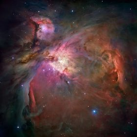

Explore the
Universe
Beyond Earth
From our Solar System to the Hubble Messier catalog — discover the cosmos through interactive maps, stunning imagery, and telescope guides.
Welcome
Learn about planets, star clusters, and distant galaxies in a visual, approachable way. Whether you're picking up your first telescope or diving into deep-sky objects, you'll find clear explanations and tools to guide your journey.
Explore the Site
Start with our interactive Solar System, browse 110 Hubble Messier targets, or compare telescope designs before your first night under the stars.
Tour the planets in an interactive 3D model, compare their true relative sizes, and learn how long sunlight takes to reach each world.
Browse Charles Messier's catalog of 110 deep-sky targets — nebulae, star clusters, and galaxies — plotted on an interactive sky map with Hubble imagery.
Compare refractors, reflectors, compound scopes, and radio dishes to understand how different telescope designs gather and focus light.

Travel through our cosmic neighborhood — planets, moons, and the structure of our star system.
Enter →110 deep-sky wonders with an interactive sky map and NASA Hubble gallery.
Explore →Compare telescope types — Dobsonians, refractors, SCTs, and radio dishes.
Browse →Why This Website?
"Across the sea of space, the stars are other suns."
— Carl Sagan